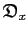
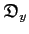
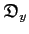

Next: Optimisation Up: Relaxation curve-fitting Previous: Initialisation of the data Contents Index
Once all the peak intensity data has been loaded a few calculations are required prior to optimisation. Firstly the peak intensities for individual residues needs to be averaged across replicated spectra. The peak intensity errors also have to be calculated using the standard deviation formula. These two operations are executed by the user function
relax_fit.mean_and_error()
Any residues which cannot be resolved due to peak overlap were included in a file called `unresolved'. This file consists solely of one residue number per line. These residues are excluded from the analysis by the user function
deselect.read(file=`unresolved')
Finally the experiment type is specified by the command
relax_fit.select_model(`exp')
The argument `exp' sets the relaxation curve to a two parameter {
 ,
,  } exponential which decays to zero. The formula of this function is
} exponential which decays to zero. The formula of this function is
| (theparentequation.1) |
where
is the peak intensity at any time point 
,  is the initial intensity, and
is the initial intensity, and
 is the relaxation rate (either the
is the relaxation rate (either the
 or
or
 ). Changing the user function argument to `inv' will select the inversion recovery experiment. This curve consists of three paremeters {
). Changing the user function argument to `inv' will select the inversion recovery experiment. This curve consists of three paremeters {
 ,
,  ,

} and does not decay to zero. The formula is
,

} and does not decay to zero. The formula is
| (theparentequation.2) |
Edward d'Auvergne 2008-09-29